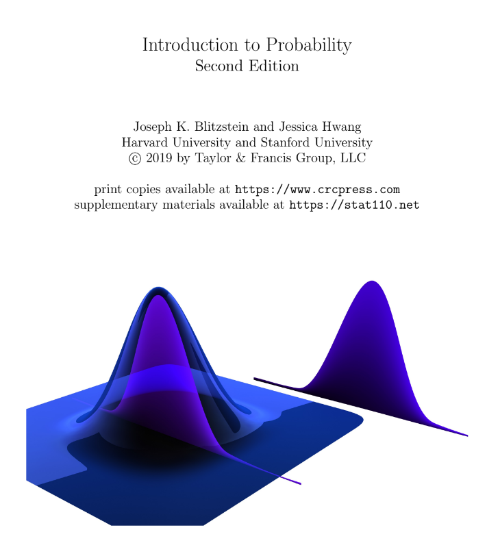
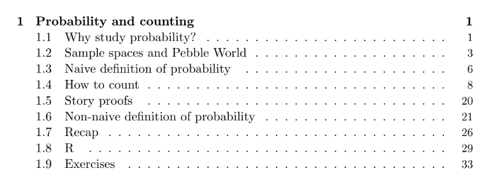
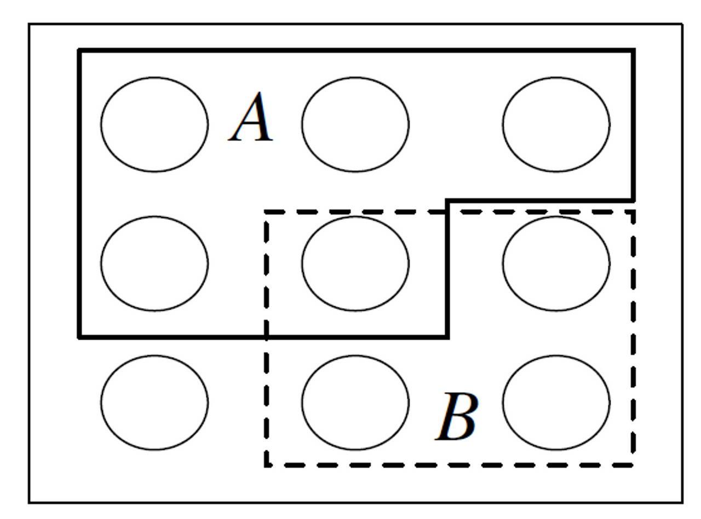
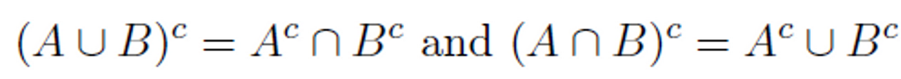
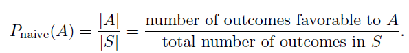
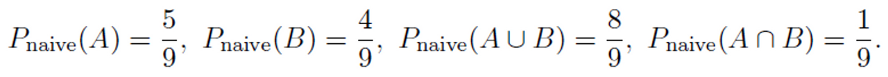
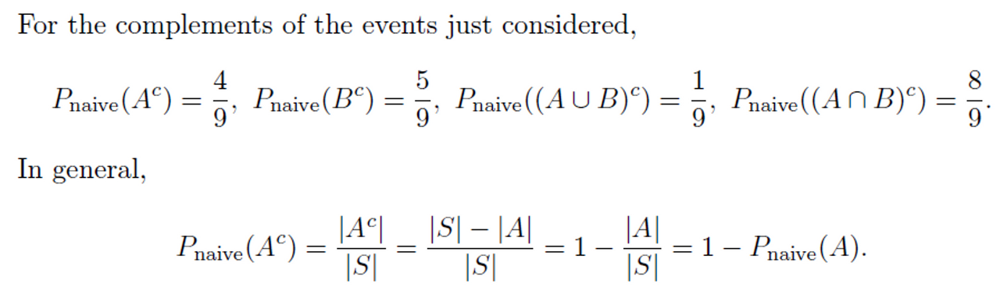
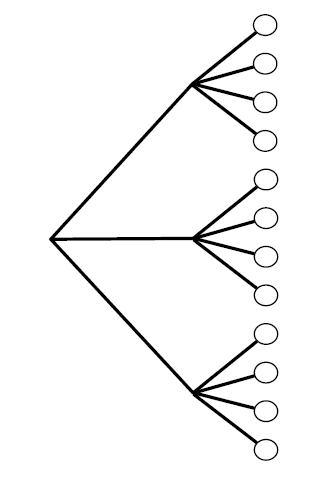

1.Probability and counting

1.1 Why study probability?
수학은 확실성의 논리이며 확률은 불확실성의 논리이다.
list of applications:
statistics : 확률은 통계를 위한 기초이자 언어이다. 데이터를 사용하여 세상에 대해 배울 수 있는 다양한 강력한 방법을 가능하게 한다.
computer science: Randomized algorithms은 실행되는 동안 무작위 선택을 하며, 많은 중요한 응용 분야에서 현재 알려진 결정론적 대안(deterministic alternatives)보다 더 간단하고 효율적이다. 확률은 또한 알고리즘의 성능을 연구하는 데 필수적인 역할을 하며, 머신러닝, 인공지능에서 중요한 역할을 한다.
Life: 인생은 불확실하고 확률은 불확실성의 논리이다. 인생에서 결정되는 모든 결정에 대해 공식적인 확률 계산을 수행하는 것은 실용적이지 않지만, 확률에 대해 열심히 생각하는 것은 우리가 몇 가지 흔한 오류를 피하고, 우연을 조명하고, 더 나은 예측을 하는 데 도움이 될 수 있다.
Physics, Biology, Meteorology, Gambling, Finance, Political science, Medicine….
1.2 Sample spaces and Pebble World

sample space S: 실험의 모든 가능한 경우의 집합
event A: sample space S의 부분 집합
표본 공간은 finite, countably infinite, uncountably infinite 할 수 있다. 표본공간이 finite(유한)할 때, 우리는 Pebble World로 시각화 할 수 있으며 Figure 1.1과 같이 나타낼 수 있다. 각각의 pebble은 결과를 나타내며 event는 pebbles의 집합이다.
만약 모든 pebble이 같은 질량을 가지면 pebble은 동일한 확률로 선택되어진다. 이러한 특별한 경우가 다음 두 Section에서 다뤄지며 Section 1.6에서는 질량이 다른 경우에 대해 다룬다.
집합 이론은 확률에서 매우 유용하다(각 사건을 표현). 이러한 방식은 사건을 한 가지 이상의 방법으로 표현 가능하게 해준다. 어떠한 한 가지 표현은 다른 표현보다 더 쉽다.

1.3 Naive definition of probability
Naive definition of probability
- A를 사건이라 하고 S를 유한한 표본공간이라 하자. 이때 The naive probability of A는

예시로, Figure 1.1의 상황에서



The naive definition은 매우 제한적. S가 유한해야하며 각각의 pebble들의 질량이 동일해야 한다. 이것은 종종 잘못 적용되는데, justification 없이 그것이 50:50이라고 주장하는 것(예를 들어, 화성에 지적 생명체가 산다를 50:50이라고 함.)
The naive difinition이 적용 가능한 중요한 케이스들이 존재한다.
문제에 symmetry(대칭)이 있는 경우 등확률이다. ex) 동전이 50% 확률로 앞면이 나올 수 있다. -> 동전이 물리적으로 symmetry.
설계에 의한 등확률. ex) N명의 인구 중 설문조사를 위해 n명의 사람을 랜덤하게 뽑는 경우. 성공한다면 나이브한 정의를 적용가능하지만, 다양한 문제로 인해 달성이 어려울 수 있다.
영가설에서의 모형
1.4 How to count
Multiplication rule
- 2개의 하위 실험 A, B로 구성된 복합실험을 생각해보자. 실험 A는 a개 가능한 경우의 수가 있고 실험 B는 b개의 가능한 경우의 수가 있다. 이런 경우 복합 실험은 a*b의 가능한 경우를 갖는다.

※ 실험이 시간순서로 진행된다고 생각하기 쉬우나 A가 B보다 먼저 실행된다는 요건은 없다. 주어진 내용이 없으면 순차적으로 실행된다고 생각하지 말 것?